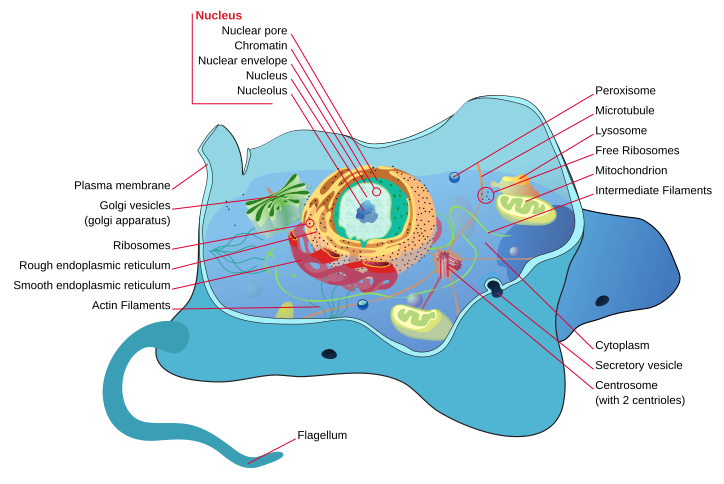
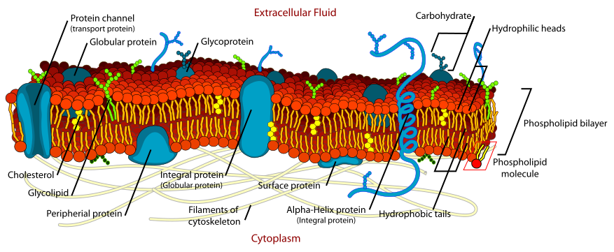

▼目次
生命の基本単位である細胞は、共通の進化的起源を持ちながらも、植物界と動物界において独自の適応戦略を遂げてきた。
植物細胞を定義付ける最大の特徴は、セルロース微繊維を主成分とする細胞壁の存在である。これは単なる物理的障壁ではなく、膨圧の維持や形態形成における力学的支持体として機能する。細胞膜外側に構築されるこのマトリックスは、ペクチンやヘミセルロースを含み、細胞の伸長成長を精密に制御している。
色素体と液胞の役割
また、植物細胞に特有の細胞小器官である葉緑体（クロロプラスト）は、光エネルギーを化学エネルギーへ変換する光合成の中枢である。チラコイド膜における光化学反応と、ストロマでのカルビン回路の進行は、地球上のエネルギー循環の起点となる。さらに、成熟した植物細胞において体積の大部分を占める中心液胞は、無機イオンや二次代謝産物の貯蔵、加水分解酵素による物質分解、そして吸水による膨圧生成を通じて、個体の直立保持や恒常性維持に寄与している。
動物細胞は細胞壁を欠くため、細胞膜は柔軟であり、エンドサイトーシスやエキソサイトーシスによる物質輸送が極めて活発である。細胞外マトリックス（ECM）としてコラーゲンやプロテオグリカンが分泌され、組織の力学的強度を担保するが、植物の細胞壁ほど硬固ではない。
オルガネラの多様性と特化
動物細胞特有の構造として中心体（中心粒）が挙げられ、これは細胞分裂時における紡錘体形成の極として機能する。また、リソソームによる細胞内消化系が発達しており、不要なタンパク質や外来異物の分解を担う。ミトコンドリアはエネルギー代謝の中枢として、酸化的リン酸化を通じて膨大なATPを供給するが、その動態は細胞のエネルギー需要に応じて融合と分裂を繰り返す。

細胞骨格は、微小管、アクチンフィラメント、中間径フィラメントからなり、細胞の形態維持のみならず、物質輸送や運動の足場として機能する。
植物細胞において、細胞骨格は移動能力の欠如を補うためのダイナミックな再編成を行う。特に皮層微小管は、細胞膜直下においてセルロース合成酵素複合体の移動をガイドし、細胞壁の微繊維の配向を決定する。これにより、細胞の伸長方向が規定される。
ミオシンによる原形質流動
植物細胞には動物のような筋肉収縮系は存在しないが、アクチンフィラメントとミオシンXIの相互作用による「原形質流動」が発達している。これは巨大な液胞を持つ植物細胞において、細胞内の栄養素やオルガネラを効率的に循環させるための重要な機構である。また、細胞分裂時には、赤道面にフラグモプラスト（隔膜形成体）と呼ばれる微小管構造が形成され、細胞板の構築を先導する。
動物細胞の運動性は、アクチンフィラメントの重合・脱重合および分子モーターであるミオシンIIの活動に強く依存する。これにより、遊走細胞におけるラメリポディア（葉状仮足）の形成や、細胞分裂末期の収縮環形成が可能となる。
微小管輸送と鞭毛・繊毛運動
微小管は、キネシンやダイニンといったモータータンパク質の「レール」として機能し、神経細胞の軸索輸送などに代表される長距離の物質輸送を担う。さらに、精子の鞭毛や気道上皮の繊毛など、9+2構造を持つ軸糸構造による能動的な運動は、動物細胞に特有の高度な運動制御系である。

植物における細胞間伝達は、細胞壁を貫通する「原形質連絡（プラスモデスマータ）」によって物理的に結合されたシンプラスト経路が主流である。ここを通じて、水、イオン、低分子化合物のみならず、転写因子やRNAといったシグナル分子が細胞間で直接交換される。
植物ホルモンと長距離シグナリング
オーキシンやサイトカイニンなどの植物ホルモンは、特定の輸送体（PINタンパク質など）を介して極性輸送され、個体全体の形態形成を制御する。また、篩管（しかん）を通じた全身的なシグナル伝達は、環境ストレスへの適応や花芽分化の誘導において決定的な役割を果たす。
動物細胞のコミュニケーションは、液性因子（ホルモン、サイトカイン、神経伝達物質）と、それを受容する特異的受容体（GPCRやチロシンキナーゼ型受容体など）によるシグナルカスケードが中心である。これにより、細胞内ではcAMPやカルシウムイオンをセカンドメッセンジャーとする複雑な反応が誘発される。
接合複合体による直接通信
物理的な結合としては、コネキシンタンパク質によって形成される「ギャップ結合」が存在し、隣接する細胞間でのイオンや代謝物の直接的な移動を可能にしている。これは心筋の同期した収縮や、神経系における電気的シナプス伝達において不可欠な機能である。さらに、免疫系で見られるような細胞表面分子同士の直接接触（近接分泌）による情報伝達も、精緻な自己・非自己の識別や組織の恒常性維持に寄与している。
細胞の増殖と維持を司る細胞周期は、真核生物において高度に保存されたCDK（サイクリン依存性キナーゼ）とサイクリンの複合体によって制御されている。しかし、その分裂装置の構築や細胞質分裂のダイナミクスにおいては、植物と動物の間で顕著な戦略的差異が認められる。
植物の細胞周期における最大の特徴の一つは、典型的な中心体（中心粒）を欠いた状態で行われる開戦紡錘体の形成である。前中期において、微小管は核表面から多中心的に重合を開始し、極へと収束していく。
また、植物特有の構造として、分裂準備期に現れる「前分列帯（PPB: Preprophase Band）」が挙げられる。これは皮層微小管が帯状に密集した構造であり、将来の細胞板形成位置、すなわち細胞分裂面をあらかじめ規定する。
さらに、M期後半には、微小管とアクチンフィラメントからなる「フラグモプラスト（隔膜形成体）」が赤道面に構築される。これがゴルジ体由来の囊胞を誘導・融合させることで細胞板を形成し、内側から外側へと遠心的に細胞を二分する。このプロセスは、堅牢な細胞壁を持つ植物にとって、組織全体の形態形成を制御するための幾何学的な基盤となっている。
対照的に、動物の細胞周期では、中心体が微小管形成中心（MTOC）として中心的な役割を果たす。S期に複製された中心体は、M期に両極へと移動し、星状体を有する強固な双極性紡錘体を構築する。これにより、染色体は正確に分画され、紡錘体形成チェックポイント（SAC）によって異数性の発生が厳密に防がれる。
細胞質分裂においては、植物のような細胞板形成ではなく、細胞膜直下にアクチンフィラメントとミオシンIIからなる「収縮環」が形成される。この環が絞り込まれることで、細胞膜が外側から内側へと求心的に陥入し、最終的に「分列溝」が生じて2つの娘細胞に分離する。この柔軟な分裂様式は、細胞壁を持たず、個々の細胞が組織内を移動・変形しうる動物の形態形成に適応した機構である。
細胞は単に増殖するだけでなく、劣化したタンパク質やオルガネラを排除することでその機能を維持している。この「細胞質分解」のプロセスは、栄養飢餓への応答やプログラム細胞死においても不可欠な役割を担う。
植物の細胞質分解において中枢を担うのは、細胞体積の大部分を占める中心液胞である。植物におけるオートファジー（自食作用）では、隔離膜が細胞質の一部や特定のオルガネラを包み込み、「オートファゴソーム」を形成する。これが液胞膜と融合することで、内部の成分は液胞内の加水分解酵素によって分解される。
特に植物においては、窒素欠乏時のアミノ酸リサイクルや、老化プロセスにおける栄養成分の回収にこの系が多用される。また、植物特有の分解様式として、液胞崩壊を伴うプログラム細胞死（VPEなどが関与）が存在し、道管形成や過敏症応答における細胞の迅速な除去を可能にしている。
動物の細胞質分解は、リソソームを分解の場とするオートファジー・エンドサイトーシス経路と、ユビキチン・プロテアソーム系（UPS）の2大システムに大別される。リソソームは、低pH環境下で機能する多種多様な酸性水解酵素を含み、ミトコンドリアなどの大型構造物の分解（マイトファジー）や、不要になった膜タンパク質の分解を行う。
一方で、UPSは個別のタンパク質を選択的に認識して分解する標的指向型のシステムであり、細胞周期制御因子やシグナル伝達因子の濃度を秒単位で調整する。これら分解系の破綻は、異常タンパク質の蓄積を招き、神経変性疾患やがん化の要因となる。動物細胞では、これら複数の系がクロストークすることで、動的なプロテオスタシス（タンパク質恒常性）が維持されている。
単一の受精卵から複雑な多細胞体を構築する過程において、細胞は特定の機能を持つ状態へと分化する。この過程はゲノム情報の選択的発現、すなわちエピジェネティックな制御によって決定される。
植物の細胞分化の際立った特徴は、その「可塑性（plasticity）」にある。分化した植物細胞の多くは、適切な植物ホルモン（オーキシンやサイトカイニン）の刺激を受けることで「脱分化」し、再び分裂能を持つ癒合組織（カルス）へと戻る能力を有している。
これは「全能性」と呼ばれ、個体の一部から完全な個体を再生できる能力として、農学やバイオテクノロジーの基盤となっている。根端や茎頂に位置する「分裂組織（メリステム）」では、WUSCHELやCLAVATAといった遺伝子群が幹細胞の維持と分化のバランスを厳密に制御しており、環境変化に応じた柔軟な器官形成を可能にしている。
一方で動物の細胞分化は、一般に植物よりも階層的かつ不可逆的である。胚性幹細胞（ES細胞）のような多能性を持つ状態から、外胚葉、中胚葉、内胚葉への分化を経て、最終的に神経細胞や筋細胞などの終末分化細胞へと導かれる。
この過程では、ヒストンの修飾やDNAのメチル化といったエピジェネティックな変化が累積し、特定の遺伝子座が物理的に不活性化されることで、分化状態が強固に安定化される（ワディントンの発生風景）。ただし、近年のiPS細胞技術の確立は、特定の転写因子の導入によってこの不可逆な流れを人為的にリセット（初期化）できることを証明した。それでもなお、生体内における通常の発生過程では、動物細胞は高度に特化した機能を果たすために、その運命を厳密に固定する戦略をとっている。

真核細胞のアイデンティティを規定する核は、単なる遺伝情報の貯蔵庫ではなく、高度に構造化されたダイナミックな反応場である。核膜、核膜孔複合体（NPC）、そして核ラミナから構成される核エンベロープは、細胞質との物質交換を制御すると同時に、クロマチンの空間配置を規定する。
植物の核構造における最大の特徴は、動物細胞に見られる典型的なタイプA/Bラミン遺伝子を欠損している点にある。しかし、植物細胞はラミンの機能的相同体として、NMCP（Nuclear Matrix
Constituent Proteins）やCROWDED（CRWN）タンパク質を独自に進化させてきた。これらは核膜内膜に局在し、核の形状維持やヘテロクロマチンの周辺部への配置（核膜への係留）を担っている。
核膜孔複合体とLINC複合体
植物の核膜には、SUNタンパク質とWIP/WITタンパク質からなるLINC複合体が存在し、これが細胞質のアクチン骨格や微小管と物理的に連結している。この連結系は、植物特有の核移動（光応答や根毛成長時の核配置）において決定的な役割を果たす。また、植物の核膜孔複合体（NPC）は、動物のものと比較して核膜透過制限分子の組成が一部異なり、ウイルス感染やホルモン応答に応じた選択的輸送制御が極めて精緻に行われている。
動物の核構造を支える基盤は、中間径フィラメントの一種であるラミン（Lamin A, B,
C）が形成する強固な網目状構造「核ラミナ」である。これは核膜の物理的強度を担保するだけでなく、メカノトランスダクション（力学刺激の化学信号への変換）の中枢として機能する。
トポロジー的ドメイン（TADs）の形成
動物核内では、CTCFタンパク質やコヒーシン複合体によって、クロマチンが「トポロジー的に関連したドメイン（TADs）」と呼ばれる機能単位を形成している。核膜周辺部にはラミン結合ドメイン（LADs）が集積し、遺伝子発現の抑制的なコンパートメントを構築する。細胞分裂（オープン型有糸分裂）の際には、リン酸化によって核ラミナが迅速に解体され、核膜が小胞体へと吸収されるダイナミクスは、植物と比較してより劇的な形態変化を伴う。
細胞内の恒常性は、単一のオルガネラで完結するものではなく、ミトコンドリア、葉緑体、小胞体などの膜接触部位（Contact Sites）を通じた直接的な物質・情報の授受によって維持されている。
植物細胞では、光合成によるエネルギー固定と呼吸による消費が並行して行われる。特に、光呼吸（Photorespiration）のプロセスは、葉緑体、ペルオキシソーム、ミトコンドリアの3つのオルガネラを跨いで進行し、過剰な光エネルギーによる酸化ストレスを緩和する重要な役割を果たす。
逆行性シグナル伝達
また、植物はオルガネラの状態を核の遺伝子発現に反映させる「逆行性シグナル伝達（Retrograde
signaling）」が高度に発達している。葉緑体内の活性酸素種（ROS）やテトラピロール代謝産物がシグナルとなり、核内のストレス応答遺伝子を制御することで、光環境の変化に対する迅速な順化を可能にしている。
動物細胞におけるエネルギー代謝は、ミトコンドリアの融合（Fusion）と分裂（Fission）のバランスによって厳密に制御されている。これにより、機能低下したミトコンドリアが隔離・排除されるマイトファジーが促進される。
カルシウムシグナリングとERコンタクト
小胞体（ER）とミトコンドリアの接触部位（MAMs）は、カルシウムイオンの移動や脂質代謝のホットスポットである。動物細胞では、この領域におけるカルシウム濃度の局所的な上昇が、アポトーシスの誘導やインスリンシグナルの増幅に直結しており、全身的な代謝疾患の病態生理に深く関与している。
理論的な理解を応用へと繋げるのが細胞培養技術である。植物と動物では、培地組成から増殖制御、分化誘導の論理まで、対照的なアプローチがとられている。
植物培養の歴史は、オーキシンとサイトカイニンの濃度比による組織分化の制御（スクーグ・ミラーの仮説）の発見に端を発する。植物細胞は生体外において、容易に脱分化してカルスを形成し、そこから不定芽や不定根を再分化させる能力を持つ。
プロトプラストとバイオリアクター
細胞壁を酵素的に除去した「プロトプラスト」を用いた培養系は、細胞融合や直接的な遺伝子導入（エレクトロポレーション等）に利用され、品種改良の重要な手段となっている。近年では、特定の二次代謝産物（アルカロイド、フラボノイド等）を高効率に生産するために、大規模なバイオリアクターを用いた懸濁培養が行われており、有用物質の工場としての側面も強めている。
動物培養においては、細胞の生存維持に不可欠なアミノ酸、ビタミン、増殖因子（GF）の供給が極めて重要である。長らく牛胎児血清（FBS）に依存してきたが、再現性と安全性の観点から、現在は化学的に定義された無血清培地（Serum-free
media）への移行が進んでいる。
オルガノイドとマイクロ流体デバイス
従来の二次元培養（単層培養）から、細胞外マトリックス（ECM）を用いた三次元培養への転換が加速している。多能性幹細胞（ES/iPS細胞）から誘導される「オルガノイド」は、脳、腸、肝臓などの微小な臓器構造を体外で再現し、疾患モデルや薬物スクリーニングに革新をもたらした。さらに、マイクロ流体技術を用いた「Organ-on-a-chip（生体模倣システム）」により、多臓器間の相互作用を再現する試みが精力的に行われている。